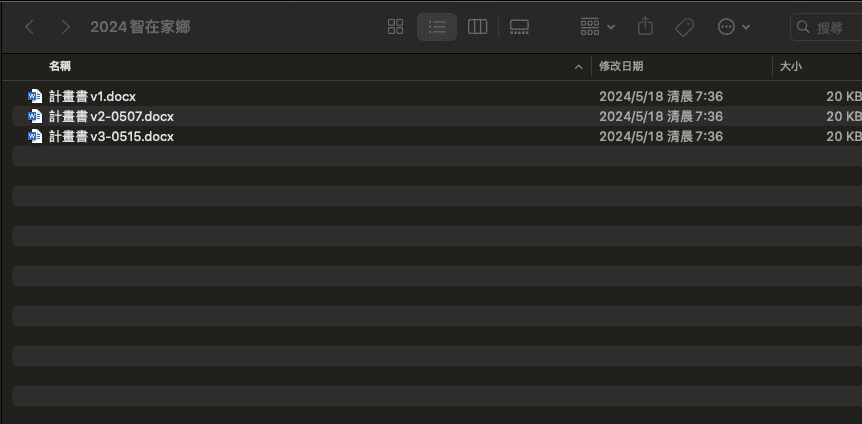
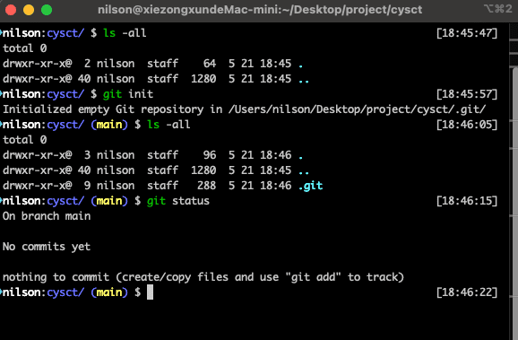

Git 介紹
Git 是什麼？
常常做報告、做文件，但是不一定可以一次就順利完成，不免會有一些修改，就會常常出現下圖這種情況，導致檔案常常很亂

Git 是一個可以用來做版本控制的工具，可以讓在撰寫文件或程式的時候保留以前的版本，透過 Git 可以隨時回到過去的版本比對資料的差異
Git 的優點
- Git 為分散式版本控制系統。
- 免費開源
- 速度快
Git 安裝
前往 git 官網 查看安裝說明
Git 怎麼開始呢
在要版本控制的資料夾執行以下 git 指令，可以將 git 初始化
1 | $ git init |
完成 git 初始化後會自動產生一個 .git 的隱藏欓，可以執行以下 Git 指令查看 Git 是不是真的在運行
1 | $ git status |

上面圖片主要做了四個動作- 第一步 先列出資料夾內容(顯示這資料是空的)
- 第二步 執行 git 初始化指令
- 第三步 列出所有資料夾發現多了一個 .git 的隱藏欓
- 第四步 執行 git status 查看 git 狀態
接著因為 git 會紀錄是誰上傳的等等的資訊，所以開始前需要執行下面兩行指令，告訴 git 你是誰
1 | $ git config --global user.name "your name" |
這樣 git 就可以開始使用了
Git 常用指令
將檔案加入版控
可以直接使用 . 將整個資料夾加進去，也可以直接加那個檔案
1 | $ git add . |
新增檔案修改備註
這修改內容主要是方便自己或者是別人再回來閱讀的時候看出修改的內容
1 | $ git commit -m "修改內容" |
查看版本編號、commit 等等的內容
1 | $ git log |
比較版本的不同
提交 commit 後就可以透過下面的語法去比較兩個版本的差異，這邊一樣只需要打前幾位就可以了
1 | $ git diff 版本邊號 版本編號 |
新增分支
初始化後會自動生成一個 master 分支，如果需要新增分支，可以使用以下程式
1 | $ git branch "分支名稱" |
切換在不同分支上面的檔案是不會互相影響，也就是說在其他分支上修改的內容是不會影響到 master 分支的
切換 分支/版本
分支名稱/分支名稱 不用打全名，只需要打前幾位就可以切換了
1 | $ git checkout "分支名稱/分支名稱" |
合併分支
假設我在 dev 分支開發完成，想要合併到 master ，這時候就可以使用 merge 的指令，記得在使用前先切換到 master 分支
1 | $ git merge "分支名稱" |
結語
這篇主要是 Git 的基本使用，下一篇 Git-Github使用 會提到說 github 是什麼？要如何更進階的使用 Git